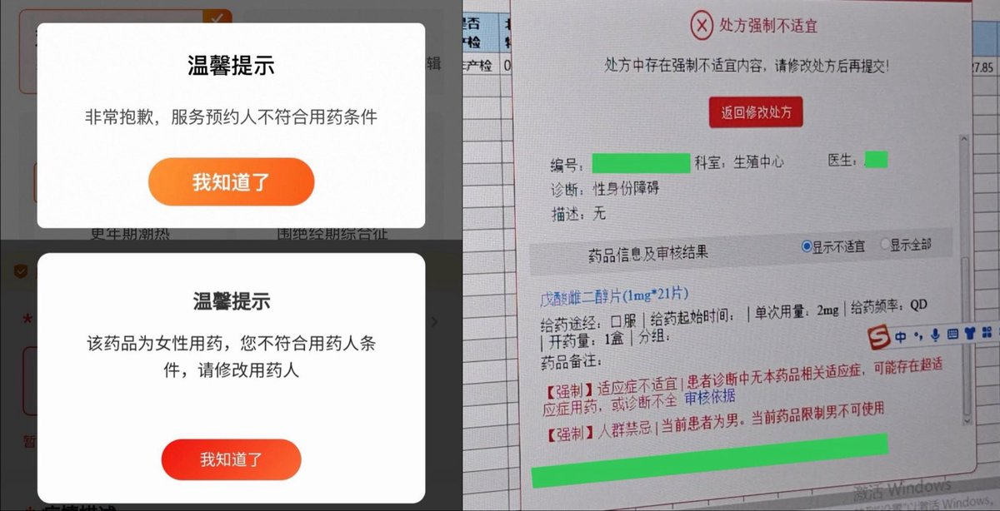
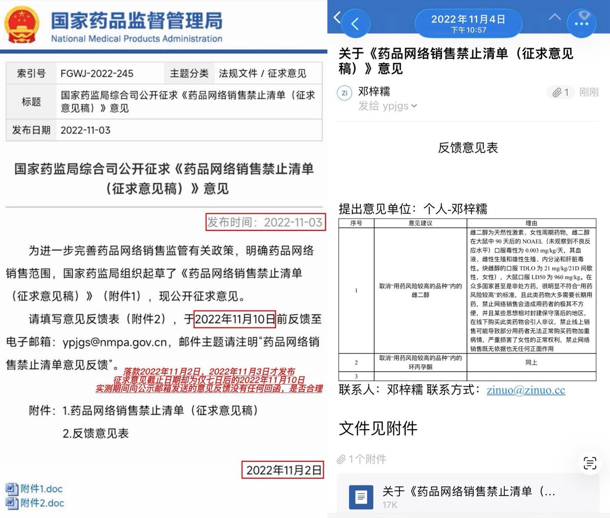

索瑟尔 𝓢𝓸𝓻𝓬𝓮𝓻𝓮𝓻🍥
@Sorcerer1311
应该说，未成年跨性别处方的门槛，特别是对小地方来说确实很高
雌/雄激素药物在绝大多数国家都是处方药
我会积极的寻找和宣传非官方获取安全的hrt药物途径
但是我不会认为对激素药物的加强管制是不正确的
亦如我不认为愈美片和普瑞巴林禁止网售是不正确的一样


梓糯🏳️⚧️🇹🇼🇨🇦
@Mirro_zinuo
這個事情我在2022年就警告過，當時我也是關於草案意見徵集的信訪運動及上訪運動發起人。
後來的事情大家也知道了，牢糯喜提一年十個月有期徒刑，罪名是：尋釁滋事罪。 https://t.co/rk3eXRQeJb